08 月 10日 ( 水 )
上高地のクマ
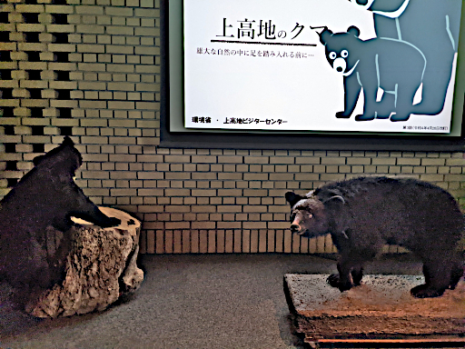
長野県松本市上高地にある上高地ビジターセンターで毎日開催されている 30 分程度の上高地のクマのレクチャーを聴いてきたのでそれの防備録。
以下、剥製を示したり、動画や写真を映しながら。
- 体長は成獣でだいたい 1m 〜 1.2m
- ツキノワグマは人を餌として狩ったりしない
- ツキノワグマは人が怖い ( でかいし )
- 人とのバトルが勃発するのは出会い頭に遭遇したとき
- 出会わないのが人にもクマにも最重要
- クマ鈴は有効
- おしゃべりも有効
- 出会い頭に出会ったら静かにあとずさり
- 走って逃げないで。習性で追いかけちゃう
- 大きな音で脅かさない
- 大声を出したり、その他の方法で追い払わない
- 追い払いは専門家でないと危険
- もし襲われて他に手段がなかったら防御姿勢
- クマは攻撃中でも人が怖いので１発かましたらすぐ逃げる
- クマの攻撃は 2、3 分
- とにかくストレスを与えない
- 春先は冬眠から起きてぼんやりしているのか遊歩道近くでウトウトしている子もいる
- 上高地に住んでるツキノワグマは５〜６頭
- 個体の区別は主にツキノワグマの語源にもなってる模様で
- カメラを使うなどその他の方法でモニタリングを実施していて個体に名前をつけてる
- 写真右の子はサワちゃん ( 体長 1m、20 歳くらいのおばあちゃん )
- サワちゃんは沢渡のあたりで越冬していたのでサワちゃん
- 冬眠はもっぱら沢渡あたりの標高まで降りてっていうのが多い
- 体重は 40kg 〜 100kg
- 上の体重は１匹のクマの年間体重変位
- 春先から夏の間の飢餓状態期に 40kg まで落ちる
- 秋にどんぐりなどをたくさん食べて 100kg まで増える
- 梓川の河原にはアリの巣がたくさんあるので、河原でアリを食べてる子を結構見かける ( 上高地のクマたちの唯一のタンパク源 )
- 春先に冬を越せなかったニホンジカやカモシカの死体を食べることも
- 増えた体重は冬眠〜春先〜夏季の飢餓により 40kg まで落ちる
- 上高地の子たちの主な食べ物は葉っぱ
- 葉っぱが主食なので春から夏にかけて飢餓状態
- 冬眠明けから夏にかけては犬と間違えるくらいにガリガリに痩せてしまう
- 人間の食べ物やゴミはちょーご馳走なので絶対にやってはいけない
- 人の出したものを食べてしまうと餌付け個体になってしまい、最終的に捕殺対象になってしまう
- クマに限らず餌付け個体になってしまうと自力で自然の中から餌を得る能力が失われ冬を越せずに餓死する
- 人に慣れた個体、餌付け個体になってしまうと人の周囲に出没し人身事故を起こしてしまう。その結果捕殺するしかなくなる
- 絶対に餌をやらないで。ガリガリで可哀想に思えてもそれが本来の自然の姿
- 絶対にゴミは厳重に保管して持ち帰って
- 守らないとクマやサル、その他野生動物を殺すことに
- 秋になるとクヌギなどの実つまりどんぐりを食べるけど上高地にはない
- 沢渡あたりまで降りて秋の実りを堪能する
- 田代湿原あたりで見られる親子熊は霞沢岳の方で冬眠している
- 春になると霞沢岳から降りてきて ( 人間が勝手に作った ) 道路や遊歩道を越えて田代湿原まで来ているので大冒険
- 繰り返すけど餌付け個体になると人の周囲をうろうろするようになって、出会い頭に人身事故、そして捕殺となる
- 事故になった人もクマもどちらも不幸なので、上高地のクマたちや野生動物を大切に思うなら絶対に餌はやらないでゴミは密封して持ち帰って ( 宿泊施設の指示に従ってね )
参考資料
対クマ防御姿勢 ( 参考動画 )
- Category :
- 日記
- 旅行
- 上高地
- 松本市
- 長野県
- ツキノワグマ
- クマ
- Black Bear
初日フォトダイアリー
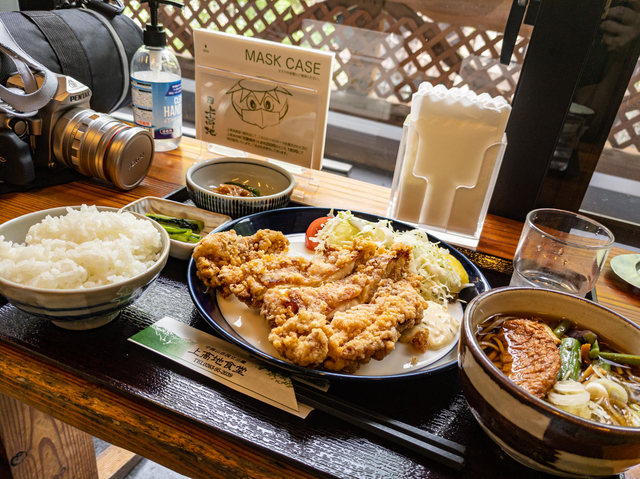
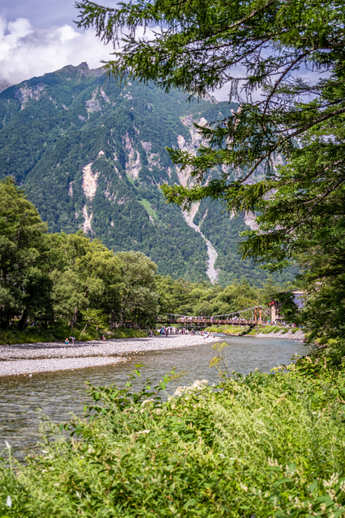
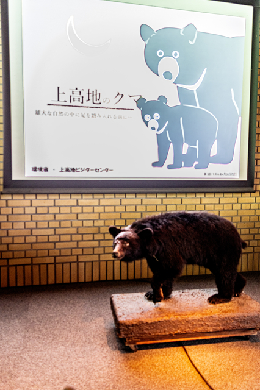
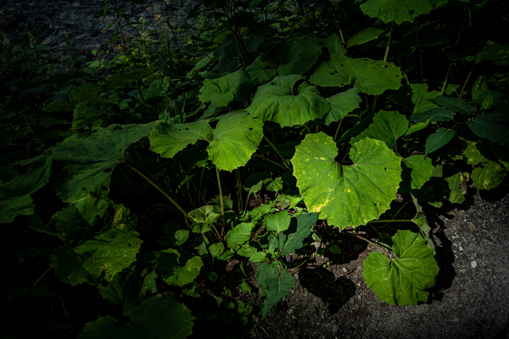
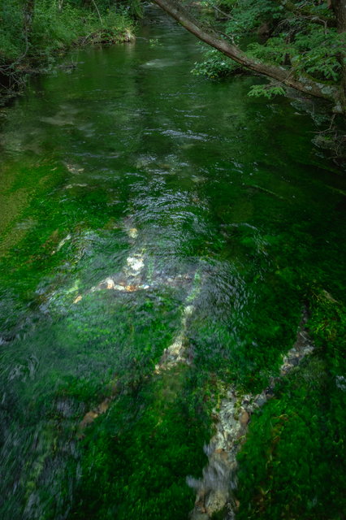
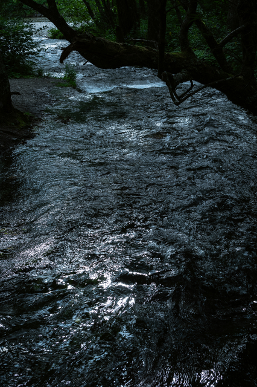
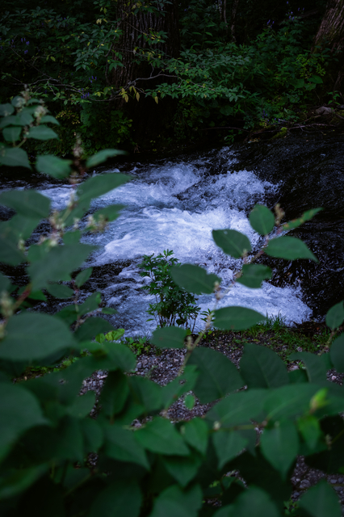
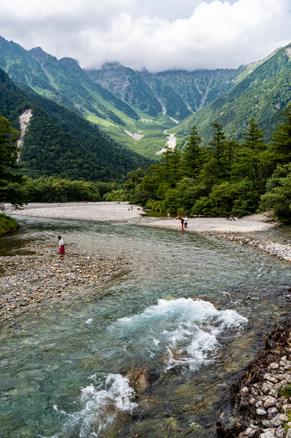
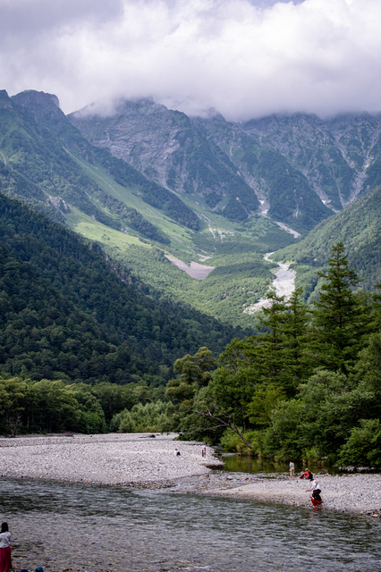
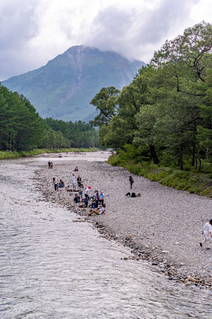
- Category :
- 日記
- 旅行
- 上高地
- 松本市
- 長野県
- ツキノワグマ
- クマ
- Black Bear